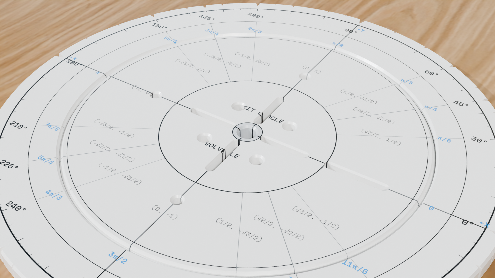
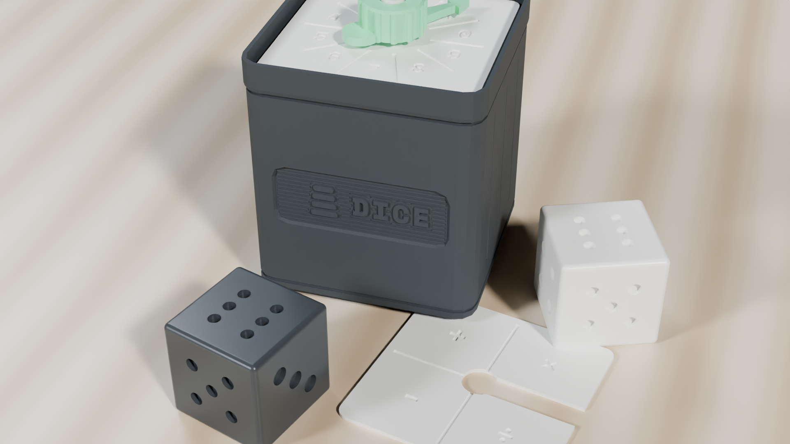

Appendix A: Hands-On Block Studio Guide & How We Built StackCalc
3D Print Files, Laser Templates & Classroom Safety: All downloadable
.stland.3mf3D print files, full-scale PDF cardstock cutouts, laser-cutter templates, and enclosure CAD drawings are available free of charge at stackcalc.io/downloads (including the complete Learning Lab Master STL Pack), stackcalc.io/hardware, and the Hackaday.io StackCalc Build Log. Always print classroom math blocks in certified non-toxic PLA or PETG filament, inspect finished prints to remove any loose filament wisps, and observe the small-parts safety guidance in the Preface (not for children under 3 years of age; recommended for supervised use in Grades 3–6, ages 8–12).
A.1 The 84-Millimeter Rule & Nine 3D-Printed Block Studios
Why build physical math blocks when digital screens are everywhere? Because your hands and eyes learn together! When you pick up a physical 10-rod, stack an \(84\text{ mm}\) fraction tower, or balance a lever beam, your fingers can feel why an idea is true before you even press a key on the calculator.
Grounded in Jerome Bruner's hands-on learning research (Bruner, 1966), Zoltan Dienes' hands-on base-ten block discoveries (Dienes, 1960), and David Macaulay's clear visual explanations of how things work (Macaulay, 2016), every StackCalc block studio follows three simple design principles: 1. True Mathematical Scale (The \(1\text{U}\) Miniblock Standard): Every unit tile across the studios shares a unified \(19.0 \times 19.0\text{ mm}\) square footprint and a \(7.0\text{ mm}\) visible \(1\text{U}\) height step (with a recessed interlocking lip so stacked blocks never slide off each other). Ten stacked unit blocks reach \(70.0\text{ mm}\) to match a 10-rod, and twelve stacked unit blocks reach \(84.0\text{ mm}\) to match the \(1\text{-Whole}\) Fraction Tower with zero gap. 2. Three Ways to Build: Every classroom and family can make these tools using a desktop 3D printer (with zero support material needed), a school laser cutter, or ordinary cardstock paper, scissors, and a glue stick. 3. Tidy Modular Trays: All nine hands-on block studios (comprising 12 modular desktop kits) store neatly inside standard Gridfinity modular trays (\(42.0\text{ mm}\) grid squares) so pieces stay organized on your desk.
All 3D-printable .stl and .3mf files for these nine studios (12 modular desktop kits in total) can be downloaded free of charge at stackcalc.io/downloads, either as the complete Master STL Pack or as individual studio archives listed in the Print & Filament Schedule below. Every piece is engineered to print flat on a standard \(220 \times 220\text{ mm}\) desktop FDM printer (such as a Bambu Lab, Prusa, or Ender printer) in PLA or PETG at \(0.20\text{ mm}\) layer height with \(15\%\) gyroid or grid infill and zero support material.
A.1.1 Base-Ten, Place Value & \(84\text{ mm}\) Fraction Kits
For the Ten-Frame Studio ([▦]), print the two \(2 \times 5\) Ten-Frame trays flat on their bases in matte slate or navy PLA so the recessed counter wells and the raised 5-anchor divider rib contrast sharply against the bright counters. For the twenty \(16.5 \times 3.5\text{ mm}\) two-color flip counters, add a single filament color pause at Layer 9 (\(1.80\text{ mm}\) height) in your slicer: print the bottom half in coral red and the top half in radiant gold. When you pull the finished counters off the build plate, test-slide two counters across the finger scoops from a tray of 5 into a tray of 8 to confirm they drop smoothly into the pockets before tapping [+] in [▦] Ten-Frame Mode.
The Place Value Studio ([PV]) prints inside a \(3 \times 1 \times 7\text{U}\) Gridfinity box with an embossed "PLACE VALUE" front plaque and [PV] lid badge. When slicing the two \(4 \times 2\) activity trays (\(77.8 \times 38.6 \times 8.85\text{ mm}\))—one labeled THOUSANDS | HUNDREDS | TENS | ONES (1000 | 100 | 10 | 1) for whole numbers and the second labeled ONES • TENTHS | HUNDREDTHS | THOUSANDTHS (1 • 0.1 | 0.01 | 0.001) with a raised decimal point (•)—pause for a filament swap on the top two layers so the column headers and the raised decimal dot stand out in bright white. Print the 44 digit miniblocks (0–9 plus four extra 0 placeholders) and the 9 stackable +1 regrouping cubes with a \(0.4\text{ mm}\) nozzle, then verify that ten stacked +1 cubes stand at \(70.0\text{ mm}\) to match the Ten-Frame 10-Rod during 10-for-1 regrouping trades.
Because the \(84\text{ mm}\) Fraction Studio ([a ᵇ/c], [g] [SIMP]) relies on exact side-by-side height comparisons in the lid comparator well (\(1 = 84.0\text{ mm}\), \(\frac{1}{2} = 42.0\text{ mm}\), \(\frac{1}{3} = 28.0\text{ mm}\), \(\frac{1}{4} = 21.0\text{ mm}\), \(\frac{1}{6} = 14.0\text{ mm}\), \(\frac{1}{8} = 10.5\text{ mm}\), and \(\frac{1}{12} = 7.0\text{ mm}\)), slice all 78 blocks at \(0.20\text{ mm}\) layer height (using \(0.10\text{ mm}\) adaptive layers on the \(\frac{1}{8}\) block so \(10.5\text{ mm}\) lands on an exact layer boundary). Every tower features a recessed \(1.85\text{ mm}\) top-and-bottom lap joint that locks blocks together without adding to their visible height. After printing, stand \(\frac{1}{2} + \frac{1}{3} + \frac{1}{6}\) (\(42 + 28 + 14 = 84.0\text{ mm}\)) beside the white \(1\text{ WHOLE}\) tower in the comparator well and run your fingertip across the top seam to confirm they sit flush before testing [g] [SIMP].
A.1.2 Area Grids, Geared Clocks & Rotary Volvelles
In the Counting & Array Studio ([f] [RECT], [g] [TRI]), each student kit includes 24 gravity-docking \(1\text{U}\) tiles (\(19.0 \times 19.0 \times 7.0\text{ mm}\) visible height) across four high-contrast colors (6 white, 6 blue, 6 gold, 6 slate), while the classroom drop-front Desktop Storage Case holds 144 tiles (\(12 \times 12\)) for building area and perimeter rectangles. You can print all 36 tiles of a single color on one build plate in under 95 minutes; after printing, stack 12 tiles vertically (\(12 \times 7.0\text{ mm} = 84.0\text{ mm}\)) and stand them next to the Fraction Studio's \(1\text{-Whole}\) tower to verify zero cumulative height drift.
The two interlocking rails of the \(90^\circ\) Corner L-Frame & Area-Grid Studio print flat and snap together at a crisp \(90^\circ\) corner joint—forming a horizontal top rail and a vertical side rail that frame two-digit area models on your desk. Print the 40 stackable tiles by color family: four large square flats (\(38.6 \times 38.6\text{ mm}\)) in radiant gold, twelve rectangular rods (\(38.6 \times 19.0\text{ mm}\)) in electric blue, twelve \(+1\) unit tiles in bright white, and twelve \(-1\) unit tiles in coral red. Test the \(90^\circ\) corner dovetail by laying out \((10 + 2) \times (10 + 3) = 100 + 50 + 6 = 156\) inside the L-Frame rails and checking that all tiles sit flat without binding.
The Planetary Geared Clock ([🕒]) & \(360^\circ\) Unit Circle Volvelle are favorite maker builds because their moving mechanical parts snap together with zero metal screws. Print the clock's 12-tooth center sun gear, three 60-tooth planet gears, and 132-tooth outer ring gear (\(12 + 2 \times 60 = 132\)) with the slicer's "Elephant's Foot Compensation" set to \(0.15\text{ mm}\) so the bottom gear teeth mesh smoothly without rubbing:
$\(\text{Clock Gear Ratio} = 1 + (132 \div 12) = 1 + 11 = \mathbf{12 : 1\text{ Exact Reduction}}\)$
Press the three 60-tooth planet gears onto the carrier pins, snap the minute hand onto the center sun shaft, and spin the minute hand one full \(360^\circ\) turn to watch the meshed gear train drive the hour hand forward by \(\frac{1}{12}\) of a circle (\(30^\circ\), or 1 hour). Next, drop the four removable \(90^\circ\) dial quadrants into the clock face and snap the two concentric rings of the \(120\text{ mm}\) Unit Circle Volvelle together with the center snap pin so the sight window rotates smoothly from \(0^\circ\) to \(360^\circ\).

A.1.3 Number Racks, Fair-Weight Dice & Logarithmic Prime Blocks
The Number Rack, Math Dominoes & Quest Scoreboard ([g] [COUNT], [f] [?]) share the standard \(3 \times 1 \times 7\text{U}\) Gridfinity box footprint. Print the two horizontal Number Rack rails and slide five white blocks and five coral-red blocks onto each rail before snapping the end caps into the tray walls; for the Math Dominoes, pause for a filament color swap on the top two layers so the raised pips pop out clearly inside the 12-frame divider tray. Print the 60 universal +10 \(1\text{U}\) tokens in radiant gold and the \(3 \times 1\) Quest Scoreboard lid (1–10 sockets plus the 100 Mastery Tower socket) in dark slate so students can stack 1 token (\(+10\text{ pts}\)) for a physical block solution and a 2nd token (\(+20\text{ pts}\)) for a verified SC-6 stack solution.
When slicing the Fair Probability Dice & Modular Spinner Studio ([🎲])—which includes four \(18\text{ mm}\) volume-equalized \(d6\) dice and the polyhedral dice set (\(d4, d6, d8, d10, d12, d20\))—increase infill to \(100\%\) concentric or rectilinear infill (or 4 perimeter walls with \(40\%\) symmetric gyroid infill) so the internal mass stays balanced around the center of gravity. Because the CAD model carves the six pips on the 6 face shallower than the single deep pip on the 1 face, all six faces lose the exact same volume of plastic. For the companion \(1 \times 1\) spinner box, print the low-friction center spindle at \(0.12\text{ mm}\) layer height so the standard 10-sector (0–9) decimal lid and the three drop-in dials—Biased (\(\frac{1}{2}\text{–}\frac{1}{4}\text{–}\frac{1}{4}\)), Binary (\(50/50\)), and Operations (\(+, -, \times, \div\))—spin freely with a flick of your finger.

In the Logarithmic Prime Factor Studio ([PRIME], [g] [FACT], [GCF], [f] [LCM]), each prime block's visible height is scaled to \(7.00\text{ mm} \times \log_2(p)\) so that stacking blocks adds their heights to multiply their numbers! Slice the prime blocks (2, 3, 5, 7, 11, 13, 17, 19, 23, 29 plus fused powers \(2^2, 2^3, 3^2, 5^2\)) at \(0.10\text{ mm}\) layer height so logarithmic heights like the 3-block (\(11.09\text{ mm}\)) and 5-block (\(16.25\text{ mm}\)) print within \(\pm 0.05\text{ mm}\) of the laser-tick marks on the drop-front comparator case. Test your finished print by stacking \(2 \times 2 \times 3\) (\(7.00 + 7.00 + 11.09 = 25.09\text{ mm}\)) beside the 12 tick mark, and standing \(20 = 2^2 \times 5\) (\(30.25\text{ mm}\)) beside \(50 = 2 \times 5^2\) (\(39.51\text{ mm}\)) to check \(\text{GCF}(20,50) = 10\) (\(23.25\text{ mm}\)) and \(\text{LCM}(20,50) = 100\) (\(46.51\text{ mm}\)).
| Target Number | Prime Building Blocks | Visible Block Heights Added Together (in \(\text{mm}\)) | Mark on Comparator Scale |
|---|---|---|---|
| 2 | 2-block |
\(7.00\text{ mm}\) (\(1\text{U}\) base unit) | Target 2 |
| 3 | 3-block |
\(11.09\text{ mm}\) | Target 3 |
| 4 | \(2 \times 2\) (\(2^2\)) | \(7.00 + 7.00 = 14.00\text{ mm}\) | Target 4 |
| 6 | \(2 \times 3\) | \(7.00 + 11.09 = 18.09\text{ mm}\) | Target 6 |
| 10 | \(2 \times 5\) | \(7.00 + 16.25 = 23.25\text{ mm}\) | Target 10 |
| 12 | \(2^2 \times 3\) | \(14.00 + 11.09 = 25.09\text{ mm}\) | Target 12 |
| 20 | \(2^2 \times 5\) | \(14.00 + 16.25 = 30.25\text{ mm}\) | Target 20 |
| 30 | \(2 \times 3 \times 5\) | \(7.00 + 11.09 + 16.25 = 34.34\text{ mm}\) | Target 30 |
| 50 | \(2 \times 5^2\) | \(7.00 + 32.51 = 39.51\text{ mm}\) | Target 50 |
| 60 | \(2^2 \times 3 \times 5\) | \(14.00 + 11.09 + 16.25 = 41.34\text{ mm}\) | Target 60 |
| 100 | \(2^2 \times 5^2\) | \(14.00 + 32.51 = 46.51\text{ mm}\) | Target 100 |
A.1.4 Printable Cardstock Cutout Workshop (Scissors & Glue Nets)
If you don't have a 3D printer handy, you can print the full-scale paper nets from stackcalc.io/downloads at \(100\%\) scale on heavy cardstock (\(110\text{ lb}\) index paper), score the dashed lines with an empty ballpoint pen, cut along the solid outer edges, and glue the tabs.
To fold a rigid Two-Row Ten-Frame Tray (\(125 \times 42\text{ mm}\) Base) that matches the exact footprint of the 3D-printed tray, lay your ruler along the dashed border of the \(125 \times 42\text{ mm}\) center base—marked with Row 1: Cells (1) (2) (3) (4) (5) on top, Row 2: Cells (6) (7) (8) (9) (10) on the bottom, and the bold vertical \(5\text{-anchor}\) line down the middle—and score firmly with a dry ballpoint pen. Next, crease the top, bottom, and twin \(12 \times 42\text{ mm}\) left and right side flaps upward at crisp \(90^\circ\) angles, then fold the inner rim strips back down over the corner glue tabs and press for ten seconds to lock the tray walls in place.
To assemble the \(84\text{ mm}\) Whole & \(42\text{ mm}\) Half Fraction Towers as hollow \(20 \times 20\text{ mm}\) square prisms calibrated to the exact \(84.0\text{ mm}\) whole-tower height, start with either the Whole (\(1\)) tower (\(4\) faces of \(20 \times 84\text{ mm}\) printed with "1 WHOLE" on the front and "100%" on the back) or the Half (\(1/2\)) tower (\(4\) faces of \(20 \times 42\text{ mm}\) printed with "1/2" on the front and "50%" on the back), scoring and folding all four vertical creases at \(90^\circ\) angles so the strip wraps into a square tube. Glue the long side tab inside the fourth wall to close the square prism, then fold the \(20 \times 20\text{ mm}\) top and bottom square caps over their three glue tabs so your cardstock 1/2 towers stack flush alongside a 1 WHOLE tower.
You can also build the \(120\text{ mm}\) Unit Circle Volvelle & Prime Comparator Ruler from heavy cardstock in under ten minutes. For the Two-Disc Unit Circle Volvelle (\(120\text{ mm}\) Diameter), cut out the larger \(120\text{ mm}\) bottom degree wheel (\(0^\circ\) to \(360^\circ\) marked in \(5^\circ\) and \(15^\circ\) ticks) and the smaller \(96\text{ mm}\) top pointer wheel, carefully snipping out the shaded sight window on the top disc; punch a \(3\text{ mm}\) hole through the center crosshairs of both discs and push a brass paper fastener (or a short 3D-printed snap pin) through the center so the top pointer spins smoothly around all four \(90^\circ\) quadrants. For the Folding Prime Factor Comparator Strip, cut out and fold the L-shaped cardstock comparator stand alongside the rectangular cardstock strips for the 2-block (\(7.00\text{ mm}\)), 3-block (\(11.09\text{ mm}\)), 5-block (\(16.25\text{ mm}\)), and 7-block (\(19.65\text{ mm}\))—laying two 2-strips and one 3-strip end-to-end along the vertical comparator scale lands right on the printed 12 line (\(25.09\text{ mm}\)), matching the 3D-printed Prime Factor Studio!
A.2 Printing Settings, Color Guide & Quick Checks
Teachers and parents can customize classroom settings anytime via the [g] [FLAGS] menu ([g] + [×], then tap 0–9 to toggle a flag):
| Flag # | Screen Tag & Default | Classroom Purpose |
|---|---|---|
| Flag 0 | 0:F0 (0 Off) |
General-purpose user flag 0 for classroom experiments |
| Flag 1 | 1:F1 (0 Off) |
General-purpose user flag 1 for classroom experiments |
| Flag 2 | 2:INT (HRD / APP) |
Interface Style Selector: toggles between Hardware replica (HRD) and expanded touch (APP) layout |
| Flag 3 | 3:FACE (0 Off) |
Hardware / App faceplate skin selector |
| Flag 4 | 4:STK (1 4-LN) |
Stack View Layout: 1 (4-LN, default) = 4-Shelf / Split Stack View, 0 (1-LN) = Large Single-Line X |
| Flag 5 | 5:DEP (4-LV) |
Stack Depth Mode: cycles 2-LV (2-Level) \(\to\) 4-LV (4-Level \(T, Z, Y, X\), default) \(\to\) 8-LV (8-Level) |
| Flag 6 | 6:MOD (0 SC-6) |
Active Calculator Model selector (when inside the FLAGS menu) |
| Flag 7 | 7:FRC (0 Decimal) |
Fraction Display Mode: 0 = Decimal, 1 = Fraction (a b/c or d/c) |
| Flag 8 | 8:/c (0 Auto) |
Fixed Denominator Lock: 1 = Locks fractions to the denominator set by [g] [/c] |
| Flag 9 | 9:d/c (0 Mixed) |
Improper Fraction Style: 0 = Mixed Number (a b/c), 1 = Improper (d/c) |
A.2.1 3D Print & Filament Schedule (Part 1: 3 Core Anchor Studios & Part 2: 6 Companion Specialty Studios)
To make classroom 3D printing simple and modular, the nine physical studios are organized into Part 1: The 3 Core Anchor Block Studios (PLACE-01, FRAC-01, and PRIME-01, which anchor 80% of daily K–6 lessons across Book 2A and Book 2B) and Part 2: The 6 Companion Specialty Studios (which you can print as your class reaches geometry, time, probability, and fluency stations):
Part 1: The 3 Core Anchor Block Studios (Print These First)
| Anchor Studio Code & Kit Name | Gridfinity Box | Filament & Slicer Profile | Direct STL Pack Download |
|---|---|---|---|
PLACE-01: Ten-Frame, Place Value & Counting/Array Studios |
\(3 \times 1 \times 7\text{U}\) | \(0.20\text{ mm}\) PLA; pause at \(1.80\text{ mm}\) on counters for red/gold swap; 4-color tile plates (\(12 \times 7.0 = 84.0\text{ mm}\)) | Ten-Frame STL • Place Value STL • Counting Tiles STL |
FRAC-01: 84 mm Fraction Towers & Comparator Studio |
Desktop Case (\(3 \times 1\)) | \(0.20\text{ mm}\) PLA (\(0.10\text{ mm}\) adaptive on \(\frac{1}{8}\) block for exact \(10.5\text{ mm}\) height) | Fraction Studio STL Pack |
PRIME-01: Prime Factor Logarithmic Tower Studio |
Desktop Case (\(3 \times 1\)) | \(0.10\text{ mm}\) fine layers for \(\pm 0.05\text{ mm}\) logarithmic height match (\(h(p) = 7.0 \cdot \log_2(p)\text{ mm}\)) | Prime Factor STL Pack |
Part 2: The 6 Companion Specialty Studios (Print as Needed by Unit)
| Companion Studio & Modular Kit Name | Gridfinity Box | Filament & Slicer Profile | Direct STL Pack Download |
|---|---|---|---|
| 4. 90° Corner L-Frame & Area Studio | \(3 \times 1 \times 7\text{U}\) | \(0.20\text{ mm}\) PLA in 4 colors (gold flats, blue rods, white/red units) | L-Frame & Area STL Pack |
| 5a. Planetary Geared Clock | \(3 \times 2 \times 7\text{U}\) | \(0.20\text{ mm}\) PLA with \(0.15\text{ mm}\) elephant-foot compensation on gears | Geared Clock STL Pack |
| 5b. Unit Circle Volvelle | \(120\text{ mm}\) Disc | \(0.20\text{ mm}\) PLA; two-color swap on degree ticks & sight window | Unit Circle STL Pack |
| 6a. Number Rack Studio | \(3 \times 1 \times 7\text{U}\) | \(0.20\text{ mm}\) PLA; print sliding \(5+5\) beads in white and coral red | Number Rack STL Pack |
| 6b. Math Dominoes Studio | \(3 \times 1 \times 7\text{U}\) | \(0.20\text{ mm}\) PLA; top-layer contrast swap on raised domino pips | Math Dominoes STL Pack |
| 6c. Quest Scoreboard | \(3 \times 1 \times 7\text{U}\) | \(0.20\text{ mm}\) PLA; 60 radiant-gold +10 tokens & dark slate lid |
Quest Scoreboard STL Pack |
| 8. Probability Dice & Spinner | \(1 \times 1 \times 7\text{U}\) | \(100\%\) concentric infill on dice; \(0.12\text{ mm}\) layers on spinner spindle | Dice & Spinner STL Pack |
A.2.2 Five-Color Filament Palette & Multi-Color Layer Swaps
To help students spot mathematical connections across different chapters—and to let any single-nozzle printer produce high-contrast parts—all nine studios share a five-color filament palette:
| Filament Color | Standard PLA / PETG Shade | Where Students Meet This Color Across the Studios |
|---|---|---|
| Bright White | Matte Snow White | \(1\text{-Whole}\) (\(84\text{ mm}\)) Fraction Tower, \(+1\) Unit Tiles, 0–9 Digit Tops, Number Rack first-5 beads |
| Coral Red | Matte Scarlet / Coral | \(\frac{1}{2}\) (\(42\text{ mm}\)) Fraction Towers, Ten-Frame Counter side A, \(-1\) Opposite Tiles, Number Rack second-5 beads |
| Radiant Gold | Silk or Matte Amber Gold | \(\frac{1}{3}\) (\(28\text{ mm}\)) Fraction Towers, Ten-Frame Counter side B, \(10 \times 10\) Hundred-Flats, 5 Prime Blocks, +10 Quest Tokens |
| Cobalt Blue | Matte Royal / Electric Blue | \(\frac{1}{4}\) (\(21\text{ mm}\)) Fraction Towers, \(10 \times 1\) Ten-Rods, 2 Prime Blocks (\(7.0\text{ mm}\)), Counting & Array Quarter-Grid |
| Slate Navy | Matte Charcoal / Dark Slate | All \(3 \times 1\) Gridfinity Storage Trays, \(90^\circ\) L-Frame Stage Rails, Comparator Wells, and Faceplate Bezels |
You do not need an expensive multi-material printer to make the raised text, pips, and clock numerals pop out in a second color. Every raised label across the nine studios—including the column headers and decimal dot (•) on the Place Value trays, the raised pips on the Math Dominoes, the \(5\text{-minute}\) outer ring numerals on the Planetary Geared Clock, and the degree ticks on the Unit Circle Volvelle—is extruded exactly \(0.40\text{ mm}\) (two \(0.20\text{ mm}\) layers) above the flat dark-slate surface below it. By right-clicking the vertical layer slider in your slicer software and inserting a standard filament pause command (M600) at the first raised layer, any single-extruder classroom printer will automatically park its nozzle, beep, and wait for you to load Bright White or Radiant Gold filament for the final two minutes of the print.
A.3 How We Built the StackCalc Learning Lab
Curious how a calculator, nine 3D-printed block studios, and this math book were invented together? We documented every step of our journey on our open-source Hackaday Engineering Blog and at stackcalc.io. Here is the behind-the-scenes story of how open-source hardware engineering, physical block design, and screen simulation came together to build StackCalc:
A.3.1 From a Tiny Watch Screen to Kid-Tested Gravity-Docking Blocks
StackCalc began on a wristwatch. When you try to do math on an Apple Watch screen that is barely \(40\text{ millimeters}\) wide, there is no room for tiny ( ) parenthesis buttons or long scrolling formulas. Reverse Polish Notation (RPN)—the 4-story Number Elevator you use in this book—made watch math direct and practical: you type your two numbers, see them sitting right on Shelf \(Y\) and Shelf \(X\), and tap the operation key. As we expanded from the watch to the iPhone, the web browser, and our physical handheld calculators (SC-6 and SC-32), we made a strict rule: every device would share the exact same mathematical brain. Whether you tap [g] [SIMP] on a handheld SC-6 at your desk or click it in the web simulator at stackcalc.io, every shelf of the stack behaves the exact same way.
Meanwhile, watching real 3rd–6th graders test our first prototypes reshaped the physical blocks just as dramatically. Our very first 3D-printed math tiles were completely flat plastic squares—and the first time elementary students tested them on a classroom table, an accidental elbow bump sent a whole multiplication array sliding across the desk! Guided by what young builders showed us with their hands, we engineered gravity-docking socket trays and stacking lips across all nine studios: adding a recessed \(1.85\text{ mm}\) interlocking lip to the bottom of every tile and molding matching socket grids into the Place Value, Ten-Frame, and L-Frame trays so tiles drop into place with a satisfying clack and stay put even when you pass a tray across the table to a partner.
Because students also loved closing their eyes and counting by touch, we added finger-traceable raised symbols across the entire kit. We raised the decimal point (•) on the Place Value tray, the 5-anchor divider rib on the Ten-Frame, and the fraction numerals on the \(84\text{ mm}\) towers so your fingertips can feel the structure of a number before your eyes even read the screen.
A.3.2 Virtual Hardware Simulation & Screw-Free Sliding Assembly
Before we ever ordered a physical circuit board or soldered a single button, we built a virtual hardware simulator that runs right on a computer screen. It draws the exact \(132 \times 65\) pixel display—including the live Ten-Frame dots ([▦]), Number Line jump arcs ([f] [LINE]), and Geared Clock hands ([🕒])—so teachers and students could test every button and Math Quiz sprint ([f] [?]) while the physical parts were still being 3D-printed.
When it came time to manufacture the physical calculator enclosure, we asked a simple question: have you ever opened a toy or calculator and found tiny metal screws that strip out the plastic or roll off the table and get lost? In our Hackaday build logs ("How the Circuit Board Design Shapes the Printed Calculator" and "Tool-Free Sliding Assembly"), we showed how we eliminated external case screws entirely by using circuit-board-driven 3D models: instead of measuring the circuit board with a ruler and guessing where the buttons and screen holes should go, our 3D-printing program reads the exact button coordinates directly from the circuit board design file so every keycap hole lines up automatically.
Even better, the calculator case prints in a 4-piece sliding lock (bottom shell, button frame, top faceplate, and a side-locking rail) that slides together like a Japanese puzzle box and locks tight with a single click, holding the internal circuit board and battery contacts securely in place—while all of your desktop math block trays print flat on any classroom 3D printer with zero support plastic to peel off:
| Engineering Layer | How We Designed It | Why It Matters at Your Desk |
|---|---|---|
| Shared RPN Engine | Identical stack math across SC-6 hardware, iOS, watchOS, and web simulator | Every keystroke and stack table in this book works identically on screen and in hand |
| Gravity-Docking Trays | \(1.85\text{ mm}\) recessed tile lips and chamfered socket pockets | Multiplication arrays and fraction towers stay locked in place when bumped |
| Tactile Raised Relief | \(0.40\text{ mm}\) (2-layer) raised numerals, pips, and 5-anchor divider ribs | Lets students trace number structures by touch and swap filament colors easily |
| PCB-Driven 3D Case | Enclosure geometry generated directly from circuit-board button coordinates | Zero misaligned buttons and tool-free 4-piece sliding rail assembly |
A.3.3 Classroom Care, Caliper Checks & Saltwater Dice Testing
Once your nine 3D-printed studios come off the printer bed, three quick quality checks will make sure every block and die performs with laboratory accuracy for years of classroom or home use:
- The \(84.0\text{ mm}\) Master Height Check (
[-]&[%]): Before placing a freshly printed set of Fraction Towers or Counting Tiles into the comparator tray, close the jaws of a digital caliper around the white \(1\text{-Whole}\) tower (\(84.00\text{ mm}\)), then stack three \(\frac{1}{3}\) Gold blocks (\(3 \times 28.00 = 84.00\text{ mm}\)), four \(\frac{1}{4}\) Blue blocks (\(4 \times 21.00 = 84.00\text{ mm}\)), and twelve Counting Tiles (\(12 \times 7.00 = 84.00\text{ mm}\)) beside it. If your printer's first layer squishes slightly (a common 3D-printing effect called "elephant's foot"), lightly deburr the bottom rim or enable \(0.15\text{ mm}\) elephant-foot compensation in your slicer so every complete stack stands within \(\pm 0.15\text{ mm}\) of \(84.00\text{ mm}\). - ** Lou Lou's Saltwater Fair-Die Float Test (
[🎲]): How do board-game makers and probability labs verify that a 3D-printed \(6\text{-sided}\) or \(20\text{-sided}\) die doesn't have an air pocket inside that biases it toward one face? Dissolve 3 tablespoons of table salt in a warm glass of water until your \(100\%\)-infill PLA die floats just below the surface. Flick the floating die gently with your fingertip 10 times** and record which face floats to the top each time! A balanced \(100\%\) concentric-infill die will bob up with different random faces, whereas a hollow or lopsided die will swing its lightest face to the top on almost every flick. - Keeping PLA Blocks Clean & Warp-Free: Because standard PLA (polylactic acid, made from fermented cornstarch and sugarcane) begins to soften above \(55^\circ\text{C}\) (\(131^\circ\text{F}\)), never wash 3D-printed math blocks in a hot dishwasher or leave a dark-slate storage bin on a car dashboard in direct summer sun. To clean classroom blocks between school terms, simply swish them in a basin of lukewarm water (\(30^\circ\text{C}\)) with a drop of mild dish soap, rinse, and towel-dry on a flat table.
For complete classroom lesson scripts and station activities that use these 3D-printed math blocks, turn to Appendix B: Teacher Lesson Plans & Station Guide.